## just for plotting later
import numpy as np
import pandas as pd
import matplotlib.pyplot as plt
from numpy.random import randn
#from matplotlib_inline.backend_inline import set_matplotlib_formats
#set_matplotlib_formats('svg')
plt.rcParams.update({'font.size': 10,
'axes.titlesize': 10,
'axes.labelsize': 10,
'lines.linewidth': 1,
'lines.markersize': 5,
'xtick.labelsize' : 10,
'ytick.labelsize' : 10,
'xtick.top' : True,
'xtick.direction' : 'in',
'ytick.right' : True,
'ytick.direction' : 'in',
'figure.dpi': 150})
def get_size(w,h):
return((w/2.54,h/2.54))Microscopic Models of Self-propulsion
Active Brownian Particles (ABPs)
After examining Run-and-Tumble Particles, we now turn to Active Brownian Particles (ABPs), which represent another fundamental model of self-propelled agents. Like RTPs, ABPs extend the equilibrium Brownian motion framework we discussed in Lecture 2, but they do so through continuous rotational diffusion rather than discrete tumbling events. This alternative self-propulsion mechanism similarly drives the system out of equilibrium.
Mathematical Formulation
To understand Active Brownian Particles, we should start from the general underdamped Langevin equation for Brownian motion:
\[m\frac{d^2\mathbf{r}}{dt^2} = \underbrace{-\gamma\frac{d\mathbf{r}}{dt}}_{\text{sink}} - \nabla U(\mathbf{r}) + \underbrace{\boldsymbol{\xi}(t)}_{\text{source}}\]
Here, \(\mathbf{r}=(x,y)\) is the particle position, \(m\) is the particle mass, and the left side represents inertial forces. On the right side we have a dissipative friction term with coefficient \(\gamma\) that removes energy from the system, a conservative force from the potential \(U(\mathbf{r})\), and a thermal noise term \(\boldsymbol{\xi}(t)\) that injects energy into the particle motion. The thermal translational noise \(\boldsymbol{\xi}(t)\) has zero mean (\(\langle\boldsymbol{\xi}(t)\rangle = 0\)) and correlations \(\langle\xi_i(t)\xi_j(t')\rangle = 2\gamma k_B T \delta_{ij}\delta(t-t')\), following the fluctuation-dissipation theorem.
The energy dissipation rate due to friction is given by \(P_{diss} = \gamma|\mathbf{v}|^2\), where \(\mathbf{v}=\frac{d\mathbf{r}}{dt}\) is the particle velocity. In equilibrium, the average energy dissipation rate per degree of freedom is \(\langle P_{diss} \rangle = \frac{2\gamma k_B T}{m}\). Meanwhile, the energy injection rate from thermal fluctuations can be calculated from the work done by the random force: \(P_{inj} = \boldsymbol{\xi}(t) \cdot \mathbf{v}\).
To determine the average injected power, we need to evaluate \(\langle \boldsymbol{\xi}(t) \cdot \mathbf{v} \rangle\). This requires examining the correlation between the noise and velocity, which isn’t immediately obvious since both are stochastic quantities. We can solve this by considering the Langevin equation in the stationary state. From the equipartition theorem, we know that \(\langle mv^2 \rangle = k_B T\) per degree of freedom, which means \(\langle v^2 \rangle = \frac{k_B T}{m}\).
The instantaneous velocity can be formally expressed using the Green’s function solution of the Langevin equation:
\[\mathbf{v}(t) = \frac{1}{\gamma}\int_{-\infty}^{t} \boldsymbol{\xi}(t') e^{-(t-t')/\tau_p} dt'\]
where \(\tau_p = m/\gamma\) is the momentum relaxation time. Using this expression and the noise correlation function \(\langle \xi_i(t) \xi_j(t') \rangle = 2\gamma k_B T \delta_{ij}\delta(t-t')\), we can calculate:
\[\begin{eqnarray} \langle \boldsymbol{\xi}(t) \cdot \mathbf{v}(t) \rangle &= \frac{1}{\gamma}\sum_i\int_{-\infty}^{t} \langle \xi_i(t)\xi_i(t') \rangle e^{-(t-t')/\tau_p} dt' \\ &= \frac{2\gamma k_B T}{\gamma} \int_{-\infty}^{t} \delta(t-t') e^{-(t-t')/\tau_p} dt' = \frac{2\gamma k_B T}{m} \tau_p = \frac{2\gamma k_B T}{m} \end{eqnarray}\]
Thus, the average energy injection rate per degree of freedom is \(\langle P_{inj} \rangle = \frac{2\gamma k_B T}{m}\). The equality between injection and dissipation rates ensures detailed balance in equilibrium systems, maintaining a consistent average kinetic energy of \(\frac{k_B T}{2}\) per degree of freedom in accordance with the equipartition theorem.
For microscopic particles in a viscous medium, the inertial term becomes negligible (mass effects disappear on timescales \(t \gg m/\gamma\)), leading to the overdamped limit.
In an ABP, we add a non-equilibrium self-propulsion force, resulting in these overdamped Langevin equations:
\[\gamma\frac{d\mathbf{r}}{dt} = \gamma v_0 \mathbf{n}(t) - \nabla U(\mathbf{r}) + \boldsymbol{\xi}(t)\]
\[\frac{d\theta}{dt} = \eta(t)\]
The first equation describes the particle’s translational motion, where \(v_0\) is the self-propulsion speed and \(\mathbf{n}(t) = (\cos\theta(t), \sin\theta(t))\) is a unit vector pointing in the direction of self-propulsion.
The second equation governs the particle’s orientation \(\theta\), which evolves through rotational diffusion. The rotational noise \(\eta(t)\) has zero mean (\(\langle\eta(t)\rangle = 0\)) and correlations \(\langle\eta(t)\eta(t')\rangle = 2D_r\delta(t-t')\), where \(D_r\) is the rotational diffusion coefficient.
Unlike passive Brownian motion discussed in Lecture 2, ABPs fundamentally violate detailed balance due to the persistent self-propulsion term, which acts as an additional energy source driving the system out of equilibrium. The particle moves with a characteristic persistence time \(\tau_r = 1/D_r\) before its direction is randomized by rotational diffusion.
Mean Displacement
If we consider an active Brownian particle in two dimension starting at the origin (x=0, y=0) with an initial orientation θ=0 (pointing along the positive x-axis), the mean displacement shows interesting directional behavior:
\[\langle x(t) \rangle = \frac{v_0}{D_r}(1-e^{-D_r t})\]
\[\langle y(t) \rangle = 0\]
The mean displacement in the y-direction averages to zero due to the symmetry of rotational diffusion. The x-component shows an initial ballistic growth that saturates at the persistence length scale \(l_p=v_0/D_r\) for times much larger than the rotational diffusion time \(\tau_r=1/D_r\). This persistence length represents the typical distance traveled before the particle’s direction is randomized.
Unlike equilibrium Brownian motion where the mean displacement is zero in all directions, the ABP’s mean displacement reflects the persistence of its self-propulsion. As \(t \to \infty\), the orientation becomes fully randomized, and any further displacement averages to zero, resulting in the saturation of the mean displacement to a finite value.
# translational diffusion coefficient for T=300 K
def D_T(_eta,_R):
kBT=4.14195e-21 # k_B * 300 K in J
return(kBT/(6*np.pi*_eta*_R)) # diffusion constant returned in m^2/s
# rotational diffusion coefficient for T=300 K
def D_R(_eta,_R):
kBT=4.14195e-21 # k_B * 300 K in J
return(kBT/(8*np.pi*_eta*_R**3)) # diffusion constant returned in m^2/s
# rotate a 2D vector xy by an angle radians
def rotate(xy, radians):
x, y = xy
c, s = np.cos(radians), np.sin(radians)
j = np.array([[c, s], [-s, c]])
m = np.dot(j, [x, y])
return(float(m[0]), float(m[1]))
# generate the data of an active particle random walk
def genData_ap(N,_D,_Dr,_v,dt):
v=np.random.random(2)
v[0]=_v
v[1]=0
sigma=np.sqrt(2*_D*dt)
sigma_r=np.sqrt(2*_Dr*dt)
phi=sigma_r*randn(N).cumsum()
vx,vy=[np.zeros(N),np.zeros(N)]
vx[:],vy[:]=[v[0],v[1]]
vv=np.array([rotate([vx[i],vy[i]],phi[i]) for i in range(len(phi))])
#do the random walk
x = (sigma*randn(N)+vv[:,0]*dt).cumsum()
y = (sigma*randn(N)+vv[:,1]*dt).cumsum()
# Shift to start at the origin
x = x - x[0]
y = y - y[0]
index=[i for i in range(N)]
df=pd.DataFrame({'x':x,'y':y,'area':np.zeros(N),'max_intensity':np.zeros(N),'frame': index,'angle': phi})
return(df)
#provide some parameters
dt=0.010 # 50 ms time resolution
R=1e-6
D=D_T(1e-3,R)*1e12 # µm^2/s diffusion coefficient
Dr=D_R(1e-3,R) # rad^2/s rotational diffusion
N=100 # number of steps
# Create figure with two subplots side by side
fig, (ax1, ax2) = plt.subplots(1, 2, figsize=get_size(12,6))
# Plot passive Brownian particles (v=0) on the left subplot
for i in range(100):
dff=genData_ap(N,D,Dr,0,dt) # v=0 for passive Brownian motion
ax1.plot(dff['x'],dff['y'],'-',alpha=0.4)
ax1.set_xlabel(r"x [$\mu$m]")
ax1.set_ylabel(r"y [$\mu$m]")
ax1.set_title("PBP (v=0)")
ax1.set_xlim(-10,10)
ax1.set_ylim(-10,10)
# Plot active Brownian particles (v=10) on the right subplot
for i in range(100):
dff=genData_ap(N,D,Dr,10,dt) # v=10 for active Brownian particles
ax2.plot(dff['x'],dff['y'],'-',alpha=0.4)
ax2.set_xlabel(r"x [$\mu$m]")
ax2.set_ylabel(r"y [$\mu$m]")
ax2.set_title("ABP (v=10)")
ax2.set_xlim(-10,10)
ax2.set_ylim(-10,10)
plt.tight_layout()
plt.show()
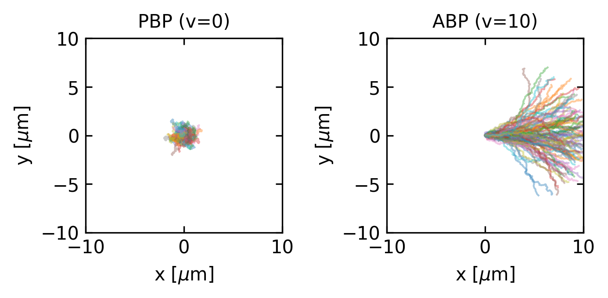
Mean Square Displacement
The mean square displacement (MSD) of an ABP reveals a rich multi-regime behavior that can be analyzed from the full expression:
\[\langle|\mathbf{r}(t) - \mathbf{r}(0)|^2\rangle = 4D_t t + \frac{2v_0^2}{D_r^2}(D_r t - 1 + e^{-D_r t})\]
where \(D_t = k_BT/\gamma\) is the thermal translational diffusion coefficient.
We can identify three distinct regimes by examining the limiting behavior at different timescales:
- Very short times (\(t \ll\tau_r\), where \(\tau_r = 1/D_r\) is the rotational diffusion time):
By expanding the exponential term \(e^{-D_r t} \approx 1 - D_r t + \frac{(D_r t)^2}{2} - ...\), we obtain:
\[\langle|\mathbf{r}(t) - \mathbf{r}(0)|^2\rangle \approx 4D_t t + v_0^2 t^2 + ...\]
This reveals a combination of diffusive behavior (\(\sim t\)) from thermal fluctuations and the beginning of ballistic motion (\(\sim t^2\)) from persistent self-propulsion.
- Intermediate times (\(\tau_t \ll t \ll \tau_r\)):
The ballistic term dominates and the MSD scales approximately as:
\[\langle|\mathbf{r}(t) - \mathbf{r}(0)|^2\rangle \approx v_0^2 t^2\]
This quadratic scaling reflects the persistent directed motion before rotational diffusion randomizes the swimming direction.
- Long times (\(t \gg \tau_r\)):
When \(t \gg 1/D_r\), \(e^{-D_r t} \approx 0\), and the MSD becomes:
\[\langle|\mathbf{r}(t) - \mathbf{r}(0)|^2\rangle \approx 4D_t t + \frac{2v_0^2}{D_r}t - \frac{2v_0^2}{D_r^2}\]
For sufficiently long times, the constant term becomes negligible, resulting in diffusive motion with an enhanced effective diffusion coefficient:
\[D_{\text{eff}} = D_t + \frac{v_0^2}{2dD_r}\]
where \(d\) is the dimensionality. This enhanced diffusion coefficient represents a key signature of the system’s non-equilibrium nature and cannot be explained by equilibrium statistical mechanics.
Code
# Parameters
D_t = 1.0 # thermal translational diffusion coefficient
v_0 = 5.0 # self-propulsion speed
D_r = 0.2 # rotational diffusion coefficient
tau_r = 1/D_r # rotational diffusion time
# Calculate theoretical MSD
def msd_theory(t, D_t, v_0, D_r):
"""Theoretical mean square displacement for active Brownian particles"""
return 4*D_t*t + (2*v_0**2)/(D_r**2)*(D_r*t - 1 + np.exp(-D_r*t))
# Time range spanning multiple regimes
t = np.logspace(-2, 2, 1000) # from 0.01 to 100
msd = msd_theory(t, D_t, v_0, D_r)
# Calculate effective diffusion coefficient
D_eff = D_t + v_0**2/(2*D_r)
# Create figure
plt.figure(figsize=get_size(10, 8))
# Plot MSD on log-log scale
plt.loglog(t, msd, 'b-', linewidth=2, label='MSD of ABP')
# Add reference lines for different scaling regimes
t_ref = np.array([0.05, 50])
plt.loglog(t_ref, 4*D_t*t_ref, 'k--', label=r'$\sim 4D_t t$ (thermal diffusion)')
plt.loglog(t_ref, v_0**2*t_ref**2, 'r--', label=r'$\sim v_0^2 t^2$ (ballistic)')
plt.loglog(t_ref, 4*D_eff*t_ref, 'g--', label=r'$\sim 4D_{eff}t$ (enhanced diffusion)')
# Add vertical line at rotational diffusion time
plt.axvline(x=tau_r, color='gray', linestyle=':', label=r'$\tau_r = 1/D_r$')
# Mark the three regimes
#plt.annotate("Short-time regime", xy=(0.02, 0.3), xytext=(0.02, 0.3), fontsize=9)
#plt.annotate("Intermediate-time regime", xy=(0.5, 10), xytext=(0.5, 10), fontsize=9)
#plt.annotate("Long-time regime", xy=(10, 200), xytext=(10, 200), fontsize=9)
plt.xlabel(r'Time $t$')
plt.ylabel(r'MSD $\langle|\mathbf{r}(t) - \mathbf{r}(0)|^2\rangle$')
#plt.legend()
plt.tight_layout()
plt.show()
Probability Distribution
The steady-state probability distribution of ABPs cannot be written in the Boltzmann form, unlike equilibrium systems. Instead, it depends on both position and orientation, and generally has to be obtained numerically or through approximation methods.
In homogeneous space, the orientation-averaged probability distribution is uniform. However, in the presence of boundaries or spatially varying potentials, ABPs exhibit phenomena like accumulation at surfaces and trapping in local potential minima that are qualitatively different from equilibrium Brownian particles.
Time Reversal Symmetry Breaking
One of the hallmarks of equilibrium systems is their invariance under time reversal. For passive Brownian particles, if we were to watch a movie of particle motion and then play it backwards, the reversed trajectories would still be physically plausible and consistent with the laws of equilibrium statistical mechanics.
For ABPs, however, time reversal symmetry is explicitly broken. This can be seen directly from the overdamped Langevin equations:
\[\gamma\frac{d\mathbf{r}}{dt} = v_0 \mathbf{n}(t) - \nabla U(\mathbf{r}) + \boldsymbol{\xi}(t)\]
\[\frac{d\theta}{dt} = \eta(t)\] Under time reversal \(t \rightarrow -t\), the position derivative transforms as \(\frac{d\mathbf{r}}{d(-t)} = -\frac{d\mathbf{r}}{dt}\), meaning the left side of the equation changes sign. The random noise term \(\boldsymbol{\xi}(-t)\) remains statistically equivalent to \(\boldsymbol{\xi}(t)\) due to its time-symmetric properties. However, the self-propulsion term \(v_0 \mathbf{n}(t)\) behaves differently: while the orientation vector \(\mathbf{n}(t)\) would evolve backwards in time, the self-propulsion speed \(v_0\) maintains its sign because it represents an internal energy conversion process (chemical to mechanical) with a fixed directionality relative to the particle’s orientation. This non-reversing active driving force is fundamentally different from reversible conservative forces, as it continually injects energy into the system. Consequently, the original equation and its time-reversed version describe physically distinct dynamics, demonstrating explicit time-reversal symmetry breaking in active systems.

Visually, this time-reversal asymmetry can be observed in trajectory data: forward trajectories show persistent motion along the instantaneous orientation, while time-reversed trajectories would appear to move persistently against their orientation—a scenario prohibited by the ABP dynamics. This persistence is also evident in the ballistic regime of the mean square displacement, which has no counterpart in equilibrium systems.
FDT Violation
As we saw in Lecture 2, the fluctuation-dissipation theorem (FDT) connects the spontaneous fluctuations in equilibrium systems to their response to external perturbations. For ABPs, this theorem is violated due to the self-propulsion term that injects energy at the microscopic level.
The violation of the FDT can be quantified by introducing an effective temperature:
\[T_{\text{eff}} = T\left(1 + \frac{v_0^2}{2D_tD_r}\right)\]
This effective temperature is higher than the bath temperature, reflecting the enhanced fluctuations due to activity.
Taxonomy of Active Particle Models
Besides the two active particle models there are a number of other ones capturing different aspects of active motion.
| Model | Key Characteristics | Movement Mechanism | Biological/Synthetic Examples | Physical Limitations |
|---|---|---|---|---|
| Run-and-Tumble Particles (RTPs) | Alternates between straight runs and random reorientations | Discrete reorientations at Poisson-distributed times | E. coli bacteria, Salmonella | Assumes instantaneous reorientations and ignores hydrodynamic interactions; real bacteria have finite tumbling durations and experience fluid resistance |
| Active Brownian Particles (ABPs) | Persistent propulsion with continuous rotational diffusion | Continuous rotational diffusion combined with constant propulsion speed | Janus colloids, synthetic microswimmers | Neglects hydrodynamic interactions and assumes constant propulsion regardless of environmental conditions; real swimmers may adjust speed based on energy constraints |
| Active Ornstein-Uhlenbeck Particles (AOUPs) | Self-propulsion with temporal correlations, colored noise | Velocity undergoes Ornstein-Uhlenbeck process with persistence time | Certain synthetic microswimmers, simplified model for biological cells | Lacks clear orientation-propulsion coupling present in real swimmers; statistical process may not accurately represent actual biological propulsion mechanisms |
| Chiral Active Particles | Circular/helical trajectories due to intrinsic torque | Constant angular velocity combined with self-propulsion | Magnetotactic bacteria, sperm cells near surfaces | Assumes constant angular velocity and curvature radius; real organisms often modulate these parameters based on environmental cues and energetic constraints |
More mathematical details on the active Brownian particle models are contained in the Active Matter Book in Section 4.4 (see Resources page).
Swimming at Low Reynolds Number
Microorganisms and synthetic microswimmers propel themselves in a liquid environment generally described by the Navier-Stokes equation, which governs fluid motion by balancing inertial forces with pressure gradients, viscous forces, and external forces:
\[\rho\left(\frac{\partial \mathbf{v}}{\partial t} + \mathbf{v} \cdot \nabla \mathbf{v}\right) = -\nabla p + \eta\nabla^2\mathbf{v} + \mathbf{f}\]
Here, \(\rho\) is fluid density, \(\mathbf{v}\) is velocity, \(p\) is pressure, \(\eta\) is dynamic viscosity, and \(\mathbf{f}\) represents external force density. Through dimensional analysis, we can determine the relative importance of the inertial (\(\rho\mathbf{v} \cdot \nabla \mathbf{v}\)) versus viscous (\(\eta\nabla^2\mathbf{v}\)) terms. If we scale length by \(L\), velocity by \(V\), and time by \(L/V\), the inertial term scales as \(\rho V^2/L\) while the viscous term scales as \(\eta V/L^2\). Their ratio yields the dimensionless Reynolds number:
\[Re = \frac{\rho v L}{\eta}\]
where \(\rho\) is the fluid density, \(v\) is the characteristic velocity, \(L\) is the characteristic length scale, and \(\eta\) is the fluid viscosity.
For a swimming bacterium like E. coli:
- \(L \approx 1 \, \mu\text{m}\)
- \(v \approx 30 \, \mu\text{m/s}\)
- \(\rho \approx 10^3 \, \text{kg/m}^3\) (water)
- \(\eta \approx 10^{-3} \, \text{Pa} \cdot \text{s}\) (water)
This gives \(Re \approx 3 \times 10^{-5}\), indicating that viscous forces overwhelmingly dominate inertial forces. This regime presents unique challenges for locomotion that are fundamentally different from our macroscopic experience.
The Scallop Theorem
At low Reynolds numbers, the inertial term in the Navier-Stokes equations can be dropped, leading to the simplified Stokes equations:
\[\eta \nabla^2 \mathbf{v} - \nabla p = 0\] \[\nabla \cdot \mathbf{v} = 0\]
where \(\mathbf{v}\) is the fluid velocity and \(p\) is the pressure. These equations are linear and time-independent, which is always nicely demonstrated in the experiment by G.I. Taylor
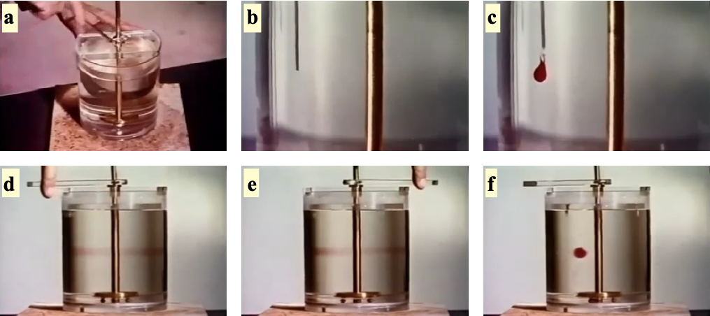
This time-reversibility is the origin of the “scallop theorem”.
The Scallop Theorem
The Scallop Theorem states that a microswimmer with a single degree of freedom cannot achieve net displacement in a Stokesian fluid (low Reynolds number). A scallop, which can only open and close its shell, represents such a mechanism with a single hinge. When the scallop opens slowly and closes rapidly in water, it generates thrust at the macroscale where inertia matters. However, at the microscale where viscous forces dominate, the time-reversibility of Stokes flow means the scallop would simply trace the same path backward and forward, resulting in no net movement regardless of how asymmetrically it times its opening and closing motions.

This theorem, formulated by Edward Purcell, can be understood as follows: if a swimmer changes its shape from A to B and then reverses this change from B to A along exactly the same path in configuration space, the net displacement will be zero. This is in stark contrast to swimming at high Reynolds numbers, where inertia allows for net displacement even with reciprocal motion.
Breaking Time-Reversibility
To achieve net displacement at low Reynolds numbers, a swimmer must break time-reversibility. This can be done in several ways:
- Non-reciprocal deformation: The swimmer changes shape in a way that is not simply the reverse of the previous motion. Examples include Purcell’s three-link swimmer and the flexible oar.

- Chiral propellers: Rotating a chiral structure like a bacterial flagellum creates propulsion. The helical shape of the flagellum converts rotational motion into translational thrust.

- Multiple degrees of freedom: Using two or more degrees of freedom with phase differences between them (like the motion of cilia) creates non-reciprocal motion.

From Swimming to Hydrodynamic Interactions
When microorganisms swim at low Reynolds numbers, they don’t just move themselves - they also generate flow fields in the surrounding fluid. These flow fields arise from the force-free swimming mechanisms we’ve explored and significantly influence how microswimmers interact with their environment and each other.
Fundamental Solutions to the Stokes Equations
To understand how swimming generates flow fields, we need to examine fundamental solutions to the Stokes equations. A particularly instructive example comes from analyzing the flow field around a sphere moving through a fluid.
When a sphere of radius \(a\) moves through a fluid with velocity \(\mathbf{v}_p=\frac{\mathbf{F}}{6\pi\eta a}\), it generates a flow field given by:
\[\mathbf{u}(\mathbf{r}) = \frac{3a}{4r} \left( \mathbf{I} + \frac{\mathbf{r}\mathbf{r}}{r^2} \right) \cdot \mathbf{v}_p + \frac{a^3}{4r^3} \left( \mathbf{I} - 3\frac{\mathbf{r}\mathbf{r}}{r^2} \right) \mathbf{v}_p\]
The first term represents the Stokeslet (point force) contribution, which decays as \(1/r\). This term is related to the Oseen tensor, which is the fundamental solution to the Stokes equation for a point force acting on a fluid element. The Oseen tensor describes the resulting velocity field when an isolated force is applied to a fluid, assuming boundary conditions where the flow vanishes at infinity:
\[G_{ij}(\mathbf{r}) = \frac{1}{8\pi\eta}\left(\frac{\delta_{ij}}{r} + \frac{r_i r_j}{r^3}\right)\]
Therefore the flow field around a point force is given by
\[\mathbf{u}_{Stokeslet}(\mathbf{r}) = \frac{3a}{4r} \left( \mathbf{I} + \frac{\mathbf{r}\mathbf{r}}{r^2} \right) \cdot \mathbf{v}_p\]
which is plotted below.
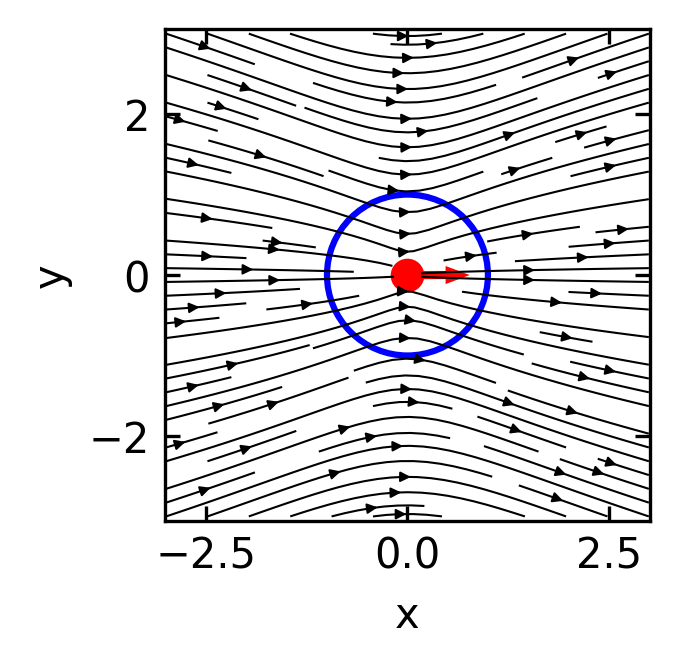
This flow field obviously violates the hydrodynamic boundary condition at the sphere’s surface. The velocity at the spheres boundary should fulfill two conditions. i) There is no inflow or outflow at the boundary, and ii) the velocity at the boundary matches the sphere’s velocity \(\mathbf{v}_p\).
The second term in the above equation must therefore be responsible for the correction of the boundary conditions.
\[\mathbf{u}_{Sliplet}(\mathbf{r}) = \frac{a^3}{4r^3} \left( \mathbf{I} - 3\frac{\mathbf{r}\mathbf{r}}{r^2} \right) \mathbf{v}_p\]
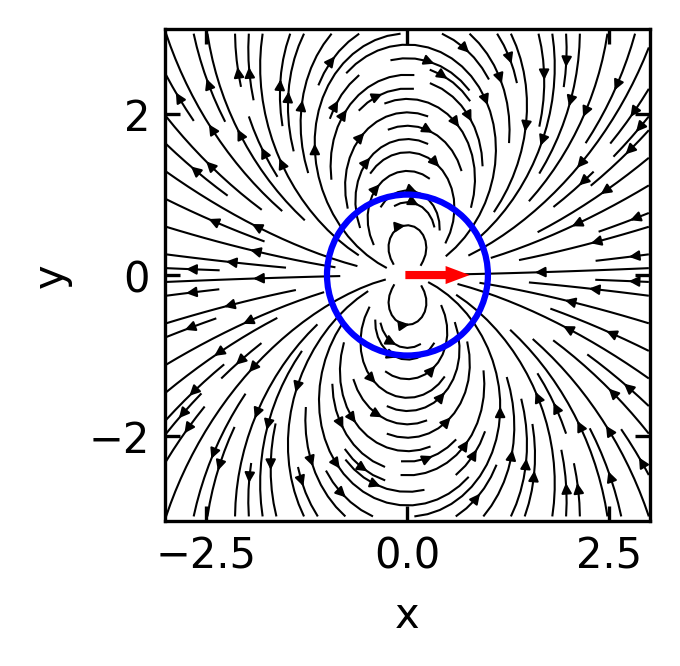
This flow field looks dipolar and as a dipole it will have a source and a sink combined. We call this flow field a source dipole (or sometimes “sliplet”) to account for the correction at the boundary. Since all the force and friction is contained in the point force solution, the source dipole does not contribute to hydrodynamic forces.
The combined flow field of both point force solution (Stokeslet and Source Dipole) lookes then Like
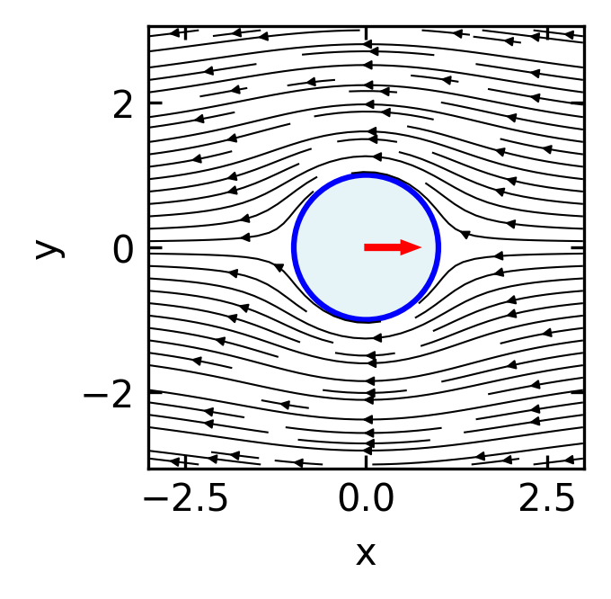
Since the first term in the total flow field is responsible for the forces, the second one does not add any forces. It must be therefore a force free solution for a sphere moving at \(\mathbf{v}_p\). To create a swimmer from this, this sliplet term should respect the no-influx condition, i.e., there should be no normal component of the flow field on the sphere boundary.
Calculating the normal component by
\[\mathbf{u}_{\text{normal}}(\mathbf{r}) = \mathbf{u}_{Sliplet}(\mathbf{r}) \cdot \mathbf{\hat{r}}\]
yields
\[\mathbf{u}(\mathbf{r}) \cdot \mathbf{\hat{r}}= \frac{a^3}{4r^3}(1-3)\mathbf{\hat{r}}\cdot\mathbf{v}_p=-\frac{a^3}{2r^3}v_p\cos(\theta)\]
To get no influx, we would need to go to a moving particle frame where the particle moves at a speed of \(v_{p}/2\). This means that multiplying the sliplet flow field by a factor of \(-2\) will generate a force free solution where the particle moves at a velocity of \(\mathbf{v}_p\).
The flow field of a force free ideal spherical swimmer is therefore
\[\mathbf{u}_{Swimmer}(\mathbf{r}) = \frac{a^3}{2r^3} \left( 3\frac{\mathbf{r}\mathbf{r}}{r^2}- \mathbf{I} \right) \mathbf{v}_p\]
This flow field is that of a source dipole. This is analogous to the electric field of an electric dipole, with the \(1/r^3\) decay characteristic of dipole fields.
In terms of the Oseen tensor, a source dipole can be expressed as a derivative of the Stokeslet solution. If we consider the Oseen tensor \(G_{ij}(\mathbf{r})\) and take its derivative with respect to the source position, we obtain the source dipole:
\[\mathbf{u}_{\text{source dipole}, i}(\mathbf{r}) = p_j \frac{\partial}{\partial r_j} G_{ik}(\mathbf{r}) p_k\]
where \(\mathbf{p}\) is the dipole moment vector. This formulation highlights how the source dipole represents a higher-order singularity in the Stokes flow, derived from the fundamental Stokeslet solution by spatial differentiation.
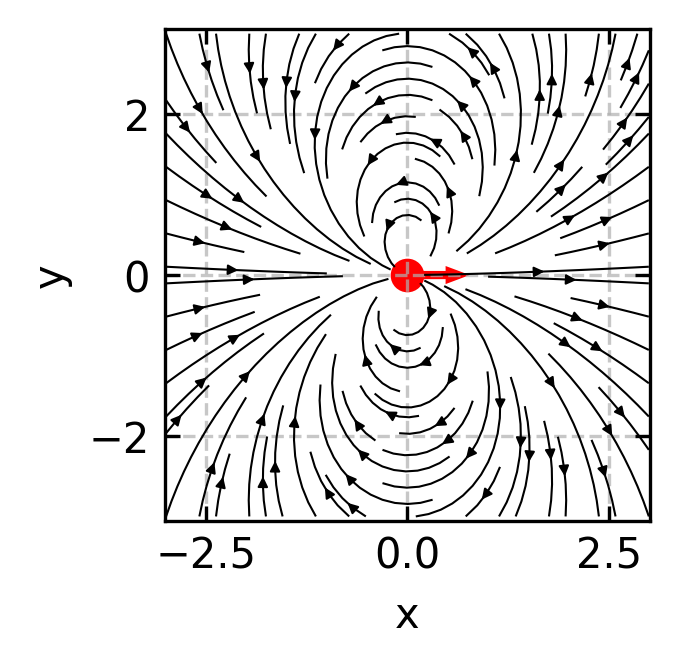
Beyond the source dipole, which is resembling the ideal swimmer, there are also situations where additional flow field components exist, that are, however, not contributing to the propulsion. Such a component is a force dipole, which is for example relavant for a E.coli bacterium.
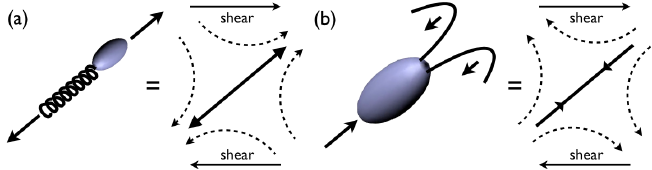
Force dipoles: Since microswimmers are force-free (no net external force), the thrust forces they generate must be balanced by drag forces, creating a force dipole configuration. A force dipole is generated by two equal and opposite point forces aligned along the x-axis, either both pointing towards the origin (converging) or both pointing away from the origin (diverging). These force dipoles:
- Decay more slowly with distance as \(1/r^2\)
- Dominate the long-range hydrodynamic interactions
- Allow us to classify swimmers as either “pushers” (forces pointing away from the origin, like E. coli) or “pullers” (forces pointing towards the origin, like Chlamydomonas)
The flow field generated by a force dipole can be derived from the Oseen tensor. It is consisting of two forces \(\mathbf{F}\) and \(-\mathbf{F}\) separated by a small distance \(\mathbf{d}\) along the x-axis, we can express the velocity field using the spatial derivative of the Oseen tensor:
\[u_i(\mathbf{r}) = d_j F_k \frac{\partial G_{ik}}{\partial r_j}\]
Here, \(u_i\) represents the \(i\)-th component of the fluid velocity at position \(\mathbf{r}\). The indices \(i\), \(j\), and \(k\) follow Einstein summation convention (summing over repeated indices). The term \(d_j\) is the \(j\)-th component of the displacement vector \(\mathbf{d}\) between the two forces, while \(F_k\) is the \(k\)-th component of the force vector \(\mathbf{F}\). The expression \(\frac{\partial G_{ik}}{\partial r_j}\) denotes the spatial derivative of the \((i,k)\) component of the Oseen tensor \(G\) with respect to the \(j\)-th coordinate direction.
For a force dipole aligned along the unit vector \(\mathbf{e}\) with strength \(S = |\mathbf{F}||\mathbf{d}|\), this results in the stresslet flow field:
\[\mathbf{u}_{\text{stresslet}}(\mathbf{r}) = \frac{S}{8\pi\eta}\left[\frac{3(\mathbf{e}\cdot\mathbf{r})^2\mathbf{r} - r^2\mathbf{e}}{r^5}\right]\]
where \(S\) is the stresslet strength (dipole moment) and \(\eta\) is the fluid viscosity. The sign of \(S\) determines the swimmer type: \(S < 0\) for pushers and \(S > 0\) for pullers. For a swimmer of size \(a\) moving at speed \(v_0\), we can estimate \(S \sim \eta a^2 v_0\).
At large distances, this simplifies to:
\[\mathbf{u}_{\text{stresslet}}(\mathbf{r}) \approx \frac{S}{8\pi\eta}\frac{3(\mathbf{e}\cdot\hat{\mathbf{r}})^2-1}{r^2}\hat{\mathbf{r}} \quad \text{as } r \to \infty\]
where \(\hat{\mathbf{r}} = \mathbf{r}/r\) is the direction vector.
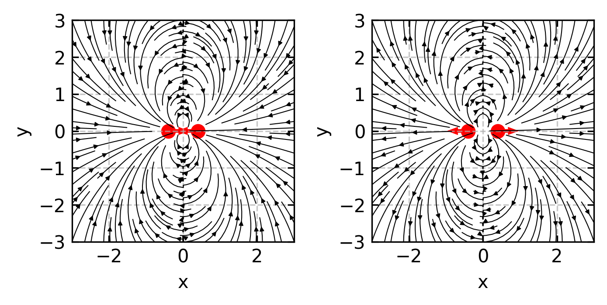
In the far field, the flow generated by a force dipole (pusher, S > 0) at large distances from the swimmer exhibits a dominant \(1/r^2\) decay pattern. Fluid is pulled in from the sides and pushed away along the swimming direction.
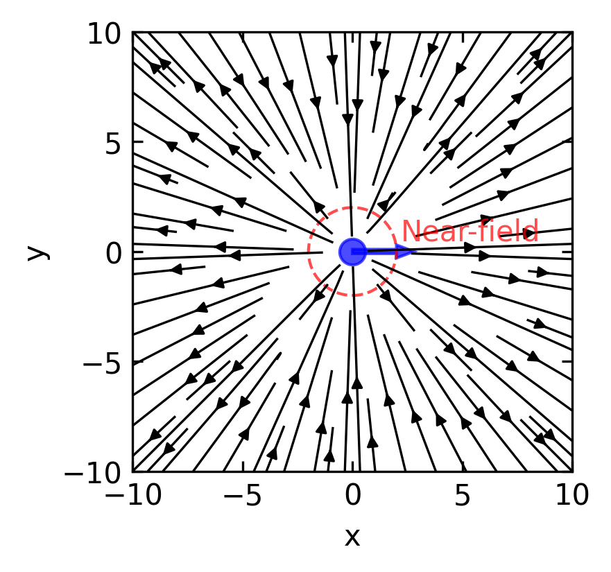
Such flow fields have been measured experimentally for bacteria.
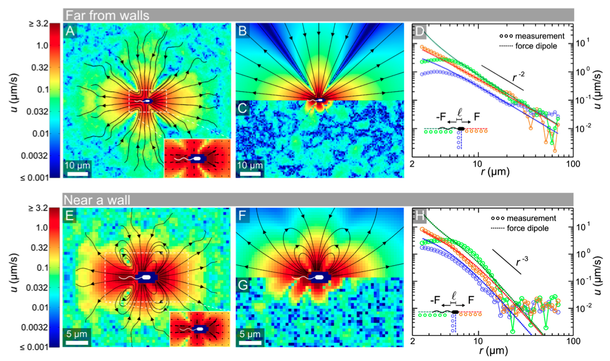
The Squirmer Model
The squirmer model provides a simplified yet powerful framework for understanding the hydrodynamics of microswimmers with surface actuation, particularly relevant for organisms propelled by ciliary or flagellar beating. Originally developed by Lighthill and refined by Blake, this model captures the essential physics of swimming at low Reynolds numbers through prescribed surface deformations.
From Boundary Conditions to Surface Actuation
The squirmer model extends the fundamental solutions of Stokes equations to active surfaces by replacing the complex dynamics of cilia or flagella with an effective slip velocity at the swimmer’s surface. Instead of modeling individual beating appendages, we consider a spherical body with a prescribed tangential velocity at its surface that mimics the net effect of the propulsion mechanism.
The key insight of the squirmer model is the formulation of this surface slip velocity in terms of a series expansion using Legendre polynomials. For a sphere of radius \(a\), the tangential velocity at the surface is given by:
\[u_θ(θ) = \sum_{n≥1} B_n \sin θ \, P_n'(\cos θ)\]
where \(θ\) is the polar angle measured from the swimming direction, \(P_n'\) is the derivative of the Legendre polynomial of degree \(n\), and \(B_n\) are coefficients that characterize the propulsion mechanism.
Each coefficient \(B_n\) corresponds to a specific mode of the surface actuation:
- \(B_1\) determines the swimming speed (proportional to \(v_0 = \frac{2}{3}B_1\))
- \(B_2\) controls the strength and sign of the force dipole (stresslet)
- Higher-order modes (\(B_3\), \(B_4\), etc.) represent increasingly complex surface deformation patterns
The complete flow field around the swimmer can be derived from these boundary conditions and is given by the radial and tangential velocity components in the moving particle frame:
\[ \begin{aligned} & u_r(r, \theta)=\frac{2}{3}\left(\frac{a^3}{r^3}-1\right) B_1 P_1(\cos \theta)+\sum_{n=2}^{\infty}\left(\frac{a^{n+2}}{r^{n+2}}-\frac{a^n}{r^n}\right) B_n P_n(\cos \theta), \\ & u_\theta(r, \theta)=\frac{2}{3}\left(\frac{a^3}{2 r^3}+1\right) B_1 V_1(\cos \theta)+\sum_{n=2}^{\infty} \frac{1}{2}\left(n \frac{a^{n+2}}{r^{n+2}}+(2-n) \frac{a^n}{r^n}\right) B_n V_n(\cos \theta) . \end{aligned} \]
Here \(B_n\) are the mode coefficients, \(P_n(\cos \theta)\) are Legendre polynomials, and
\[V_n(\cos \theta)=\frac{-2}{n(n+1)} \partial_\theta P_n(\cos \theta)\].
One finds
\[\begin{eqnarray} P_1(\cos \theta) &=& \cos \theta\\ P_2(\cos \theta) &=& \frac{1}{2}\left(3 \cos ^2 \theta-1\right)\\ \ldots\\ V_1(\cos \theta) &=& \sin \theta\\ V_2(\cos \theta) &=& \frac{1}{2} \sin 2 \theta\\ \ldots \end{eqnarray}\]
At the surface boundary (r = a), the tangential velocity is given by \(u_\theta(a, \theta)=\sum_{n=1}^{\infty} B_n V_n\) while the radial component vanishes with \(u_r(a, \theta)=0\).
Limiting our analysis to just the first two modes (n = 1 and n = 2), the tangential velocity at the boundary simplifies to:
\[ u_\theta(a, \theta)=B_1 \sin \theta+\frac{1}{2} B_2 \sin 2 \theta \]
This allows us to introduce an important dimensionless quantity called the squirmer parameter:
\[ \beta=B_2 /\left|B_1\right| \]
This parameter measures the ratio of the force dipole to the contribution of the source dipole. According to that, the swimmer are classified as
| Squirmer Type | Parameter Value | Far-Field Decay | Force Configuration | Biological Example |
|---|---|---|---|---|
| Neutral squirmer | β = 0 | ~1/r³ (source dipole) | No force dipole | Some ciliates with symmetrical propulsion |
| Pusher | β < 0 | ~1/r² (force dipole) | Forces pointing outward | E. coli bacteria, sperm cells |
| Puller | β > 0 | ~1/r² (force dipole) | Forces pointing inward | Chlamydomonas (algae with anterior flagella) |
Code
# Create figure with three subplots for different squirmer types
fig, axes = plt.subplots(1, 3, figsize=get_size(12, 4))
# Set up grid for velocity field
x = np.linspace(-3, 3, 100)
y = np.linspace(-3, 3, 100)
X, Y = np.meshgrid(x, y)
# Calculate R (distance from origin) and θ (polar angle)
R = np.sqrt(X**2 + Y**2)
Theta = np.arctan2(Y, X)
# Parameters for squirmer
a = 1.0 # radius of squirmer
B1 = 1.0 # first mode coefficient (determines swimming speed)
# Calculate flow fields for different squirmer types
for ax, beta, title in zip(
axes,
[-5, 0, 5],
["Pusher (β = -5)", "Neutral (β = 0)", "Puller (β = 5)"]
):
# B2 coefficient based on beta
B2 = beta * np.abs(B1)
# Set up arrays for velocity components
u_r = np.zeros_like(X)
u_theta = np.zeros_like(X)
# Avoid singularity inside the particle
mask = R > a
# Calculate squirmer flow field components using first two modes
# Radial component
u_r[mask] = (2/3) * ((a**3/R[mask]**3) - 1) * B1 * np.cos(Theta[mask]) + \
((a**4/R[mask]**4) - (a**2/R[mask]**2)) * B2 * (3*np.cos(Theta[mask])**2 - 1)/2
# Tangential component
u_theta[mask] = (1/3) * ((a**3/R[mask]**3) + 2) * B1 * np.sin(Theta[mask]) + \
(1/2) * (1*(a**4/R[mask]**4) + 0*(a**2/R[mask]**2)) * B2 * np.sin(2*Theta[mask])
# Convert from polar to Cartesian components
u = u_r * np.cos(Theta) - u_theta * np.sin(Theta)
v = u_r * np.sin(Theta) + u_theta * np.cos(Theta)
# Draw the squirmer as a circle
circle = plt.Circle((0, 0), a, fill=True, color='lightblue', alpha=0.6)
ax.add_patch(circle)
# Plot velocity field as streamlines
ax.streamplot(X, Y, u, v, density=1.2, color='k', linewidth=0.5, arrowsize=0.5)
# Add arrow to indicate swimming direction
ax.arrow(0, 0, 0.4, 0, width=0.08, head_width=0.2,
head_length=0.2, fc='blue', ec='blue', alpha=0.7)
# Set plot properties
ax.set_xlim(-3, 3)
ax.set_ylim(-3, 3)
ax.set_aspect('equal')
ax.set_title(title)
ax.set_xlabel('x')
if ax == axes[0]:
ax.set_ylabel('y')
plt.tight_layout(pad=0.2, w_pad=0.1)
plt.show()
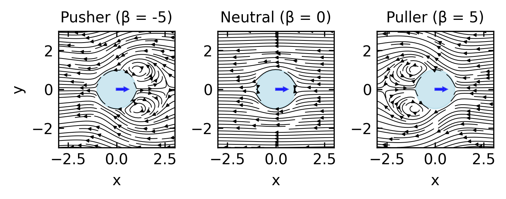
Squirmer Dynamics and Classification
Based on the value of \(B_2\) relative to \(B_1\), squirmers can be classified into three fundamental types:
Neutral squirmers (\(B_2 = 0\)): These swimmers generate no force dipole in the far field. Their leading-order flow decays as \(1/r^3\) (source dipole), resulting in minimal long-range hydrodynamic interactions. The swimming speed is determined solely by \(B_1\).
Pushers (\(B_2 < 0\)): These generate a negative force dipole, pushing fluid away along their swimming axis and drawing it in from the sides. This flow pattern corresponds to organisms like E. coli or sperm cells that propel by pushing fluid backward. The far-field flow decays as \(1/r^2\).
Pullers (\(B_2 > 0\)): These generate a positive force dipole, pulling fluid in along their swimming axis and pushing it out to the sides. This pattern is characteristic of organisms like Chlamydomonas that pull fluid toward their body using anterior flagella. The far-field flow also decays as \(1/r^2\).
The connection to the force dipole approximation we discussed earlier becomes clear in the far field (at distances \(r \gg a\)), where the squirmer’s flow field is dominated by the \(B_2\) mode and can be approximated by:
\[\mathbf{u}(\mathbf{r}) \approx \frac{B_2 a^2}{4r^2}(3(\mathbf{e}\cdot\hat{\mathbf{r}})^2-1)\hat{\mathbf{r}}\]
This expression directly corresponds to the stresslet flow field we derived earlier, with the stresslet strength \(S\) proportional to \(B_2 a^2\). The sign of \(B_2\) determines whether the squirmer acts as a pusher (\(B_2 < 0\)) or puller (\(B_2 > 0\)), creating the characteristic force dipole field that dominates long-range hydrodynamic interactions.
Applications and Examples
The squirmer model has proven invaluable for understanding both biological and synthetic microswimmers:
Biological examples include ciliated organisms like Paramecium, which use coordinated beating of thousands of cilia to generate metachronal waves along their surface. These waves can be effectively modeled as squirmer modes. The flexibility of the squirmer model allows representation of diverse organisms from bacteria to algae by adjusting the \(B_n\) coefficients to match observed flow fields.
Artificial microswimmers such as autophoretic Janus particles can also be described using the squirmer framework. By selecting appropriate \(B_n\) values, researchers can design synthetic swimmers with specific propulsion characteristics and hydrodynamic signatures.
Squirmer interactions with surfaces and other swimmers provide insight into collective behavior. Near boundaries, squirmers exhibit different behaviors depending on their type: pushers tend to be attracted to surfaces and align parallel to them, while pullers are often repelled. When multiple squirmers interact, their collective dynamics depend strongly on the relative values of their \(B_n\) coefficients, leading to complex emergent behaviors ranging from stable clusters to turbulent swarms.
The squirmer model thus bridges the gap between microscopic propulsion mechanisms and macroscopic collective behaviors, providing a versatile framework for understanding active matter across scales.
Hydrodynamic Singularities and Time-Reversibility Breaking
This distinction has important physical consequences: source dipoles enable self-propulsion but decay rapidly, while force dipoles dominate the long-range interactions between swimmers. These hydrodynamic singularities directly impact time reversibility in swimming. While the Stokes equations themselves are time-reversible, the interactions between swimmers and their environment through these flow fields introduce time-irreversibility in several important ways:
Force dipole asymmetry: The force dipole structure (whether pusher or puller) creates directional flow fields that fundamentally break time-reversal symmetry. For a swimmer with orientation vector \(\mathbf{e}\) and stresslet strength \(S\), the far-field velocity is given by:
\[\mathbf{u}(\mathbf{r}) \approx \frac{S}{8\pi\eta}\frac{3(\mathbf{e}\cdot\hat{\mathbf{r}})^2-1}{r^2}\hat{\mathbf{r}}\]
Under time reversal \(t \rightarrow -t\), the velocity field would reverse direction (\(\mathbf{u} \rightarrow -\mathbf{u}\)), but the stresslet structure determined by \(S\) and \(\mathbf{e}\) remains unchanged relative to the swimmer’s body. This creates a mathematical inconsistency, as the swimmer would need to generate a stresslet of opposite sign to maintain physical consistency under time reversal.
Interaction with boundaries: The method of images allows us to calculate the hydrodynamic interaction between a swimmer and a no-slip boundary. For a swimmer at distance \(h\) from a planar wall, the image system includes additional singularities that break time-reversal symmetry. For a force dipole parallel to the wall, the interaction energy scales as:
\[E_{wall} \sim \frac{S}{h^2}\]
where the sign of \(S\) determines attraction or repulsion. For pushers (\(S > 0\)), \(E_{wall} < 0\) creates attraction, while for pullers (\(S < 0\)), \(E_{wall} > 0\) leads to repulsion. This asymmetric interaction cannot be time-reversed while maintaining consistency with the force-free swimming constraint. We will revisit these boundary interactions in Lecture 8 when discussing mechanical properties of active materials.
Collective dynamics: In suspensions of multiple swimmers, the pairwise hydrodynamic interaction energy between two swimmers with orientations \(\mathbf{e}_1\) and \(\mathbf{e}_2\) separated by vector \(\mathbf{r}\) scales as:
\[E_{int} \sim \frac{S_1 S_2}{r^3}[3(\mathbf{e}_1\cdot\hat{\mathbf{r}})(\mathbf{e}_2\cdot\hat{\mathbf{r}})-(\mathbf{e}_1\cdot\mathbf{e}_2)]\]
Here, \(E_{int}\) represents the hydrodynamic interaction energy between two microswimmers, capturing the energetic cost or benefit of their relative positions and orientations. This interaction energy determines whether swimmers tend to align, attract, or repel each other based on their relative configurations and dipole types (\(S_1\) and \(S_2\)). These interactions lead to equations of motion with nonlinear coupling terms that produce complex collective dynamics and spontaneous symmetry breaking. We’ll explore these collective phenomena in greater detail in Lecture 7 on Collective Motion and Lecture 8 on Active Turbulence and Topological Defects, where we’ll examine how these hydrodynamic interactions drive the emergence of active turbulence characterized by chaotic flows and topological defects. The collective behavior that emerges from these microscopic interactions makes time reversal physically impossible, even in the low Reynolds number regime where the Stokes equations themselves are time-reversible.
Energy dissipation pathway: The kinetic energy spectrum \(E(k)\) of active suspensions follows different scaling laws depending on the swimmer type. For pushers, energy is transferred to larger scales (inverse cascade) with:
\[E(k) \sim k^{-\alpha}\]
where \(\alpha > 0\) and \(k\) is the wavenumber. The dissipation rate at scale \(k\) can be expressed as:
\[\varepsilon(k) = 2\nu k^2 E(k)\]
This directional energy transfer, governed by the spectral flux \(\Pi(k) = -\frac{d}{dk}\int_0^k \varepsilon(k') dk'\), represents another mathematical formulation of time-irreversibility in the system. We will explore these energy cascades in more detail in Lecture 5 on Continuum Theories and Lecture 8 on Active Turbulence.
The Oseen tensor and its derivatives (source dipoles, force dipoles) thus provide the mathematical framework for understanding how microswimmers break time-reversibility despite operating in the seemingly time-reversible Stokes flow regime. The long-range nature of these hydrodynamic interactions (particularly the slow \(1/r^2\) decay of force dipoles) means that even distant swimmers influence each other in ways that cannot be easily disentangled or reversed, contributing to the fundamental non-equilibrium character of active matter systems. These topics will be further developed in Lecture 5 when we discuss coarse-grained hydrodynamic theories.